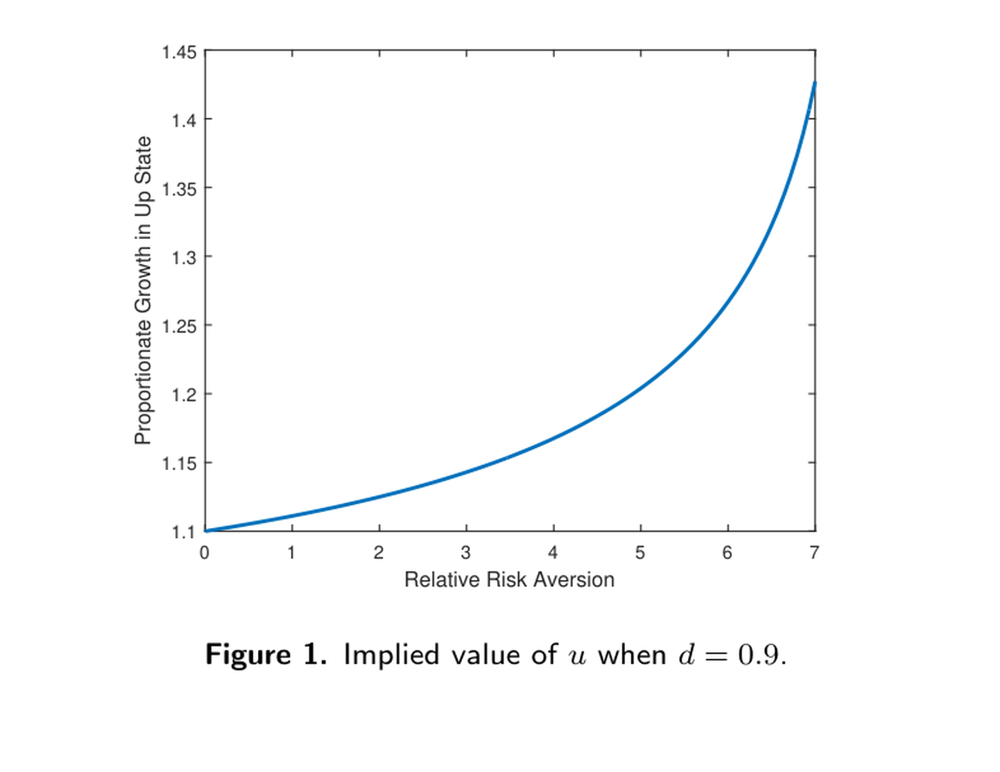

1. Risk Aversion
1. Risk Aversion
本讲导读 本讲（Toda《跨期资产定价理论》第 1 讲）阐述经典的 Arrow-Pratt 风险厌恶度量（标准参考 Pratt (1964)、Arrow (1965)）。§1 由"愿意为规避一个小赌博而放弃多少财富"导出绝对风险厌恶系数 \(\mathrm{ARA}(w)=-u''(w)/u'(w)\) 与相对风险厌恶系数 \(\mathrm{RRA}(w)=-wu''(w)/u'(w)\)。§2 三类常用效用：CARA（常绝对风险厌恶）、CRRA（常相对风险厌恶）、HARA（双曲绝对风险厌恶 / 线性风险容忍 LRT）。§3 两资产投资组合选择：Lemma 1（最优组合 \(\theta\) 唯一、符号随 \(\mathbb E[R]\gtrless R_f\)、DRRA ⟹ 越富越敢冒险）、Lemma 2（更厌恶风险者投资更少）、Lemma 3（\(\partial\theta/\partial R_f<0\) 的条件）。含 Figure 1 与习题。
1. Risk Aversion
Overview This lecture (Lecture 1 of Toda's Intertemporal Asset Pricing Theory) explains the classic Arrow-Pratt measure of risk aversion (standard references Pratt (1964), Arrow (1965)). §1 derives, from "how much wealth one would give up to avoid a small gamble," the absolute risk aversion coefficient \(\mathrm{ARA}(w)=-u''(w)/u'(w)\) and the relative risk aversion coefficient \(\mathrm{RRA}(w)=-wu''(w)/u'(w)\). §2 covers three convenient utilities: CARA (constant absolute risk aversion), CRRA (constant relative risk aversion), HARA (hyperbolic absolute risk aversion / linear risk tolerance LRT). §3 treats two-asset portfolio choice: Lemma 1 (the optimal portfolio \(\theta\) is unique, its sign tracks \(\mathbb E[R]\gtrless R_f\), DRRA ⟹ the richer invest comparatively more in the risky asset), Lemma 2 (the more risk-averse invest less), Lemma 3 (conditions for \(\partial\theta/\partial R_f<0\)). Includes Figure 1 and exercises.
1 风险厌恶的度量 / Measures of Risk Aversion
1 Measures of Risk Aversion
绝对风险厌恶系数 ARA / The absolute risk aversion coefficient 考虑一个期望效用为 \(\mathbb E[u(w)]\) 的主体，\(w\) 是财富，\(u:\mathbb R_{++}\to\mathbb R\) 满足 \(u'>0\)（递增）、\(u''<0\)（凹）。设初始财富 \(w\)，\(\epsilon\) 是一个小赌博（\(\mathbb E[\epsilon]=0\)）。两个选项：(1) 赌博加性地进入财富，期望效用 \(\mathbb E[u(w+\epsilon)]\)；(2) 不持有赌博但放弃 \(a>0\)，效用 \(u(w-a)\)。无差异当 \(a\) 满足 \(\mathbb E[u(w+\epsilon)]=u(w-a)\) (1)。Consider an agent with expected utility \(\mathbb E[u(w)]\), where \(w\) is wealth and \(u:\mathbb R_{++}\to\mathbb R\) satisfies \(u'>0\) (increasing), \(u''<0\) (concave). With initial wealth \(w\), let \(\epsilon\) be a small gamble (\(\mathbb E[\epsilon]=0\)). Two options: (1) the gamble enters wealth additively, expected utility \(\mathbb E[u(w+\epsilon)]\); (2) do not hold the gamble but give up \(a>0\), utility \(u(w-a)\). Indifference holds when \(a\) satisfies \(\mathbb E[u(w+\epsilon)]=u(w-a)\) (1).
由 Taylor 展开导出 ARA / Deriving ARA via Taylor expansion 对 (1) 左端作二阶 Taylor 展开（一阶项因 \(\mathbb E[\epsilon]=0\) 消失）：Taylor-expand the LHS of (1) to second order (the first-order term vanishes since \(\mathbb E[\epsilon]=0\)):
$$\mathbb E[u(w+\epsilon)]\approx\mathbb E\!\left[u(w)+u'(w)\epsilon+\tfrac12 u''(w)\epsilon^2\right]=u(w)+\tfrac12 u''(w)\mathbb E[\epsilon^2].\tag{2}$$
对右端作一阶 Taylor 展开：Taylor-expand the RHS to first order:
$$u(w-a)\approx u(w)-u'(w)a.\tag{3}$$
合并 (1)–(3) 并以 $=$ 替换 \(\approx\)：Combining (1)–(3) and replacing \(\approx\) by $=$:
$$u(w)+\tfrac12 u''(w)\mathbb E[\epsilon^2]=u(w)-u'(w)a\iff a=-\frac{u''(w)}{u'(w)}\frac{\mathbb E[\epsilon^2]}2.$$
投资者应放弃的金额与方差成正比。\(\blacksquare\)The investor should give up an amount proportional to the variance. \(\blacksquare\)
ARA 与 RRA 系数 / ARA and RRA coefficients \(\mathrm{ARA}(w)=-\dfrac{u''(w)}{u'(w)}\) 称为财富 \(w\) 处的绝对风险厌恶系数。若改为乘性赌博（期望效用 \(\mathbb E[u(w(1+\epsilon))]\) vs. 放弃比例 \(a\) 后 \(u(w(1-a))\)），重复上述计算得\(\mathrm{ARA}(w)=-\dfrac{u''(w)}{u'(w)}\) is the absolute risk aversion coefficient at wealth \(w\). For a multiplicative gamble (expected utility \(\mathbb E[u(w(1+\epsilon))]\) vs. giving up a fraction \(a\), i.e. \(u(w(1-a))\)), repeating the calculation gives
$$a=-\frac{wu''(w)}{u'(w)}\frac{\mathbb E[\epsilon^2]}2,$$
其中 \(\mathrm{RRA}(w)=-\dfrac{wu''(w)}{u'(w)}\) 称为相对风险厌恶系数。where \(\mathrm{RRA}(w)=-\dfrac{wu''(w)}{u'(w)}\) is the relative risk aversion coefficient.
2 CARA、CRRA、HARA 效用 / CARA, CRRA, HARA Utilities
2.1 CARA / CARA 常绝对风险厌恶 (CARA) 效用满足 \(-\dfrac{u''(w)}{u'(w)}=\alpha\)（\(\alpha>0\)）。积分两次（\(\log u'(w)=-\alpha w+c\Rightarrow u'(w)=Ce^{-\alpha w}\Rightarrow u(w)=-\tfrac C\alpha e^{-\alpha w}+D\)），由仿射变换不改变行为，取 \(C=1,D=0\)：The constant absolute risk aversion (CARA) utility satisfies \(-\dfrac{u''(w)}{u'(w)}=\alpha\) (\(\alpha>0\)). Integrating twice (\(\log u'(w)=-\alpha w+c\Rightarrow u'(w)=Ce^{-\alpha w}\Rightarrow u(w)=-\tfrac C\alpha e^{-\alpha w}+D\)), and since an affine transformation does not change behavior, set \(C=1,D=0\):
$$u(w)=-\frac1\alpha e^{-\alpha w}.$$
2.2 CRRA / CRRA 常相对风险厌恶 (CRRA) 效用满足 \(-\dfrac{wu''(w)}{u'(w)}=\gamma\)（\(\gamma>0\)）。重复计算得The constant relative risk aversion (CRRA) utility satisfies \(-\dfrac{wu''(w)}{u'(w)}=\gamma\) (\(\gamma>0\)). Repeating the calculation gives
$$u(w)=\begin{cases}\dfrac{w^{1-\gamma}}{1-\gamma},&(\gamma\neq1)\\[2mm]\log w.&(\gamma=1)\end{cases}$$
CRRA 被广泛使用，因为它是唯一在均衡增长下与常数利率相容的可加可分效用：总消费的对数近似随机游走（消费大致常速增长），而利率历史上变化不大，故 CRRA 是好的刻画。"合理"的风险厌恶是多少？ 设在确定终身收入 1，与"以 \(\tfrac12\) 概率得 \(u>1\)、\(\tfrac12\) 概率得 \(d<1\)"之间选择（\(u,d\) 表示上行/下行）。CRRA 偏好下无差异当CRRA is widely used because it is the only additively separable utility consistent with a constant interest rate under balanced growth: the log of aggregate consumption behaves like a random walk (consumption has grown at roughly constant rate), while the interest rate has not changed much historically, so CRRA is a good description. What is a "reasonable" risk aversion? Choose between a sure lifetime income of 1 and "with prob. \(\tfrac12\) get \(u>1\), with prob. \(\tfrac12\) get \(d<1\)" (\(u,d\) stand for up/down). Under CRRA, indifference holds when
$$\frac12\frac{u^{1-\gamma}}{1-\gamma}+\frac12\frac{d^{1-\gamma}}{1-\gamma}=\frac1{1-\gamma}\iff u=(2-d^{1-\gamma})^{\frac1{1-\gamma}}.$$
多数人风险厌恶约 2–5；Mehra and Prescott (1985) 认为 \(\gamma=10\) 是合理上界。Most people have risk aversion around 2–5; Mehra and Prescott (1985) suggest \(\gamma=10\) as a reasonable upper bound.

图 1：\(d=0.9\) 时 \(u\) 的隐含值（横轴相对风险厌恶 \(\gamma\)，纵轴上行状态的比例增长 \(u\)）。\(\gamma\) 越大，为承担相同下行 10% 的风险所要求的上行补偿越大。
Figure 1: implied value of \(u\) when \(d=0.9\) (x-axis relative risk aversion \(\gamma\), y-axis proportionate growth \(u\) in the up state). The larger \(\gamma\), the larger the up-side compensation required to bear the same 10% downside.
2.3 HARA / HARA 绝对风险厌恶系数的倒数 \(-u'(w)/u''(w)\) 称为风险容忍 (risk tolerance)。风险容忍关于财富线性的效用称为线性风险容忍 (LRT)：\(-\dfrac{u'(w)}{u''(w)}=aw+b\)（常数 \(a,b\) 与 \(w\) 使 \(aw+b>0\) 以保证 \(u'>0,u''<0\)）。LRT 又称双曲绝对风险厌恶 (HARA)，因为 \(-\dfrac{u''(w)}{u'(w)}=\dfrac1{aw+b}\) 的图像是双曲线。重复计算得The reciprocal of the absolute risk aversion coefficient, \(-u'(w)/u''(w)\), is the risk tolerance. A utility whose risk tolerance is linear in wealth is called linear risk tolerance (LRT): \(-\dfrac{u'(w)}{u''(w)}=aw+b\) (constants \(a,b\) and \(w\) with \(aw+b>0\) to keep \(u'>0,u''<0\)). LRT is also called hyperbolic absolute risk aversion (HARA), since the graph of \(-\dfrac{u''(w)}{u'(w)}=\dfrac1{aw+b}\) is a hyperbola. Repeating the calculation gives
$$u(w)=\begin{cases}\dfrac1{a-1}(aw+b)^{1-1/a},&(a\neq0,1)\\[1mm]-be^{-w/b},&(a=0)\\[1mm]\log(w+b).&(a=1)\end{cases}$$
特别地，取 \(a=-1\)（仅考虑财富 \(-w+b>0\iff w
3 两资产投资组合选择 / Portfolio Choice with Two Assets
组合问题设定 / The portfolio problem 投资者期望效用为 \(\mathbb E[u(w)]\)。两资产：风险资产毛收益 \(R\ge0\)（随机变量）、无风险资产无风险利率 \(R_f>0\)。设 \(\theta\) 为投资于风险资产的财富比例，则组合收益 \(R(\theta):=R\theta+R_f(1-\theta)\)。最优组合问题 \(\max_\theta\mathbb E[u(R(\theta)w)]\)。一般效用下无法解出 \(\theta\)，但可作比较静态预测。The investor has expected utility \(\mathbb E[u(w)]\). Two assets: a risky asset with gross return \(R\ge0\) (a random variable) and a risk-free asset with risk-free rate \(R_f>0\). Let \(\theta\) be the fraction of wealth in the risky asset; then the portfolio return is \(R(\theta):=R\theta+R_f(1-\theta)\). The optimal portfolio problem is \(\max_\theta\mathbb E[u(R(\theta)w)]\). We cannot solve for \(\theta\) under a general utility, but we can make comparative-statics predictions.
引理 1 / Lemma 1 设主体初始财富 \(w\)、效用 \(u\)（\(u'>0,u''<0\)），\(\theta\) 为最优组合。则：(1) \(\theta\) 唯一；(2) \(\theta\gtrless0\) 当且仅当 \(\mathbb E[R]\gtrless R_f\)；(3) 设 \(\mathbb E[R]>R_f\)。若 \(u\) 表现递减相对风险厌恶 (DRRA)（即 \(-xu''(x)/u'(x)\) 递减），则 \(\partial\theta/\partial w\ge0\)，即越富越多投资于风险资产；若 IRRA 则相反。Let the agent have initial wealth \(w\) and utility \(u\) (\(u'>0,u''<0\)), with optimal portfolio \(\theta\). Then: (1) \(\theta\) is unique; (2) \(\theta\gtrless0\) according as \(\mathbb E[R]\gtrless R_f\); (3) suppose \(\mathbb E[R]>R_f\). If \(u\) exhibits decreasing relative risk aversion (DRRA) (i.e. \(-xu''(x)/u'(x)\) is decreasing), then \(\partial\theta/\partial w\ge0\) — the agent invests comparatively more in the risky asset as he becomes richer; the opposite holds under IRRA.
引理 1 证明 / Proof of Lemma 1 (1) 令 \(f(\theta)=\mathbb E[u(R(\theta)w)]\)。则(1) Let \(f(\theta)=\mathbb E[u(R(\theta)w)]\). Then
$$f'(\theta)=\mathbb E[u'(R(\theta)w)(R-R_f)w],\qquad f''(\theta)=\mathbb E[u''(R(\theta)w)(R-R_f)^2w^2]<0,$$
故 \(f\) 严格凹，最优 \(\theta\) 唯一（若存在）。(2) 在 \(\theta=0\) 处 \(R(0)=R_f\)，故so \(f\) is strictly concave and the optimal \(\theta\) is unique (if it exists). (2) At \(\theta=0\), \(R(0)=R_f\), so
$$f'(0)=u'(R_f w)\,w\,(\mathbb E[R]-R_f),$$
其符号同 \(\mathbb E[R]-R_f\)，由凹性结论成立。(3) 一阶条件除以 \(w\) 得 \(\mathbb E[u'(R(\theta)w)(R-R_f)]=0\)。设 \(F(\theta,w)\) 为左端，由隐函数定理 \(\partial\theta/\partial w=-F_w/F_\theta\)。因 \(F_\theta=\mathbb E[u''(R(\theta)w)(R-R_f)^2 w]<0\)，只需证 \(F_w\ge0\)。记相对风险厌恶 \(\gamma(x)=-xu''(x)/u'(x)>0\)，则whose sign equals that of \(\mathbb E[R]-R_f\), and concavity gives the result. (3) Dividing the first-order condition by \(w\) gives \(\mathbb E[u'(R(\theta)w)(R-R_f)]=0\). Let \(F(\theta,w)\) be the LHS; by the implicit function theorem \(\partial\theta/\partial w=-F_w/F_\theta\). Since \(F_\theta=\mathbb E[u''(R(\theta)w)(R-R_f)^2 w]<0\), it suffices to show \(F_w\ge0\). Writing the relative risk aversion \(\gamma(x)=-xu''(x)/u'(x)>0\),
$$F_w=\mathbb E[u''(R(\theta)w)(R-R_f)R(\theta)]=-\tfrac1w\mathbb E[\gamma(R(\theta)w)u'(R(\theta)w)(R-R_f)].$$
由 \(\mathbb E[R]>R_f\) 及 (2) 有 \(\theta>0\)，故 \(R(\theta)\gtrless R_f\) 当 \(R\gtrless R_f\)。\(u\) 为 DRRA，\(\gamma\) 递减，故 \(\gamma(R(\theta)w)(R-R_f)\le\gamma(R_f w)(R-R_f)\) 恒成立。乘以 \(-u'(R(\theta)w)<0\) 并取期望：By \(\mathbb E[R]>R_f\) and (2), \(\theta>0\), so \(R(\theta)\gtrless R_f\) when \(R\gtrless R_f\). As \(u\) is DRRA, \(\gamma\) is decreasing, so \(\gamma(R(\theta)w)(R-R_f)\le\gamma(R_f w)(R-R_f)\) always. Multiplying by \(-u'(R(\theta)w)<0\) and taking expectations:
$$F_w\ge-\tfrac1w\mathbb E[\gamma(R_f w)u'(R(\theta)w)(R-R_f)]=0,$$
末式用一阶条件。\(\blacksquare\)where the last step uses the first-order condition. \(\blacksquare\)
引理 2 / Lemma 2 设 \(\mathbb E[R]>R_f\)，两个主体 \(i=1,2\)，财富 \(w_i\)、效用 \(u_i\)、相对风险厌恶 \(\gamma_i(x)=-xu_i''(x)/u_i'(x)\)、最优组合 \(\theta_i\)。若 \(\gamma_1(w_1 x)>\gamma_2(w_2 x)\) 对所有 \(x\) 成立，则 \(\theta_1<\theta_2\)，即更厌恶风险者投资于风险资产的比例更少。Suppose \(\mathbb E[R]>R_f\) and two agents \(i=1,2\) with wealth \(w_i\), utility \(u_i\), relative risk aversion \(\gamma_i(x)=-xu_i''(x)/u_i'(x)\), and optimal portfolio \(\theta_i\). If \(\gamma_1(w_1 x)>\gamma_2(w_2 x)\) for all \(x\), then \(\theta_1<\theta_2\) — the more risk-averse agent invests comparatively less in the risky asset.
引理 2 证明 / Proof of Lemma 2 由 \(\gamma_1(w_1 x)>\gamma_2(w_2 x)\) 得From \(\gamma_1(w_1 x)>\gamma_2(w_2 x)\),
$$\frac{d}{dx}\frac{u_2'(w_2 x)}{u_1'(w_1 x)}=\frac{w_2 u_2'' u_1'-u_2' w_1 u_1''}{(u_1')^2}=\frac1x\frac{u_2'}{u_1'}\big(\gamma_1(w_1 x)-\gamma_2(w_2 x)\big)>0,$$
故 \(u_2'(w_2 x)/u_1'(w_1 x)\) 递增。令 \(\theta=\theta_1>0\)（由 \(\mathbb E[R]>R_f\)）。因 \(R(\theta)\gtrless R_f\) 当 \(R\gtrless R_f\) 且该比值递增为正，故 \(\dfrac{u_2'(R(\theta)w_2)}{u_1'(R(\theta)w_1)}(R-R_f)>\dfrac{u_2'(R_f w_2)}{u_1'(R_f w_1)}(R-R_f)\) 恒成立（\(R=R_f\) 时相等）。乘以 \(u_1'(R(\theta)w_1)>0\) 取期望：so \(u_2'(w_2 x)/u_1'(w_1 x)\) is increasing. Let \(\theta=\theta_1>0\) (from \(\mathbb E[R]>R_f\)). Since \(R(\theta)\gtrless R_f\) when \(R\gtrless R_f\) and this positive ratio is increasing, \(\dfrac{u_2'(R(\theta)w_2)}{u_1'(R(\theta)w_1)}(R-R_f)>\dfrac{u_2'(R_f w_2)}{u_1'(R_f w_1)}(R-R_f)\) always (equal at \(R=R_f\)). Multiplying by \(u_1'(R(\theta)w_1)>0\) and taking expectations:
$$\mathbb E[u_2'(R(\theta)w_2)(R-R_f)]>\frac{u_2'(R_f w_2)}{u_1'(R_f w_1)}\mathbb E[u_1'(R(\theta)w_1)(R-R_f)]=0,$$
末式用主体 1 的一阶条件。故 \(\theta_2>\theta=\theta_1\)。\(\blacksquare\)where the last step uses agent 1's first-order condition. So \(\theta_2>\theta=\theta_1\). \(\blacksquare\)
引理 3 / Lemma 3 设主体初始财富 \(w\)、效用 \(u(x)\)、相对风险厌恶 \(\gamma(x)=-xu''(x)/u'(x)\)，\(R_f\) 为无风险利率、\(\theta\) 为最优组合。若 (i) \(\gamma(x)\le1\)，或 (ii) \(u\) 为 DARA 且 \(\theta\ge1\)，则 \(\partial\theta/\partial R_f<0\)。Let the agent have initial wealth \(w\), utility \(u(x)\), relative risk aversion \(\gamma(x)=-xu''(x)/u'(x)\), risk-free rate \(R_f\), and optimal portfolio \(\theta\). If (i) \(\gamma(x)\le1\), or (ii) \(u\) is DARA and \(\theta\ge1\), then \(\partial\theta/\partial R_f<0\).
引理 3 证明 / Proof of Lemma 3 由一阶条件 \(\mathbb E[u'(R(\theta)w)(R-R_f)]=0\)，令 \(F(\theta,R_f)\) 为左端，\(\partial\theta/\partial R_f=-F_{R_f}/F_\theta\)，\(F_\theta<0\)，只需证 \(F_{R_f}<0\)。对 \(R_f\) 求导：From the first-order condition \(\mathbb E[u'(R(\theta)w)(R-R_f)]=0\), let \(F(\theta,R_f)\) be the LHS; \(\partial\theta/\partial R_f=-F_{R_f}/F_\theta\) with \(F_\theta<0\), so it suffices to show \(F_{R_f}<0\). Differentiating in \(R_f\):
$$F_{R_f}=\mathbb E[u''(R(\theta)w)(1-\theta)(R-R_f)w]-\mathbb E[u'(R(\theta)w)].\tag{4}$$
情形 1（\(\gamma\le1\)）：用 \((1-\theta)(R-R_f)=R-R(\theta)\) 与 \(\gamma\) 定义，Case 1 (\(\gamma\le1\)): using \((1-\theta)(R-R_f)=R-R(\theta)\) and the definition of \(\gamma\),
$$F_{R_f}=-\mathbb E\!\left[\frac{u'(R(\theta)w)}{R(\theta)}\big(\gamma(R(\theta)w)(R-R(\theta))+R(\theta)\big)\right]=-\mathbb E\!\left[\frac{u'(R(\theta)w)}{R(\theta)}\big(\gamma R+(1-\gamma)R(\theta)\big)\right].$$
因 \(u',R,R(\theta)>0\)，若 \(\gamma\le1\) 则 \(F_{R_f}<0\)。情形 2（\(u\) 为 DARA 且 \(\theta\ge1\)）：令绝对风险厌恶 \(a(x)=-u''(x)/u'(x)\)，由 (4) 得Since \(u',R,R(\theta)>0\), if \(\gamma\le1\) then \(F_{R_f}<0\). Case 2 (\(u\) DARA and \(\theta\ge1\)): with absolute risk aversion \(a(x)=-u''(x)/u'(x)\), (4) gives
$$F_{R_f}=-(1-\theta)w\,\mathbb E[a(R(\theta)w)u'(R(\theta)w)(R-R_f)]-\mathbb E[u'(R(\theta)w)].$$
因 \(\theta\ge1\)、\(u'>0\)，只需证 \(\mathbb E[a(R(\theta)w)u'(R(\theta)w)(R-R_f)]\le0\)。\(u\) 为 DARA，\(a(\cdot)\) 递减，\(a(R(\theta)w)(R-R_f)\le a(R_f w)(R-R_f)\) 恒成立，故Since \(\theta\ge1\), \(u'>0\), it suffices to show \(\mathbb E[a(R(\theta)w)u'(R(\theta)w)(R-R_f)]\le0\). As \(u\) is DARA, \(a(\cdot)\) is decreasing, so \(a(R(\theta)w)(R-R_f)\le a(R_f w)(R-R_f)\) always, hence
$$\mathbb E[a(R(\theta)w)u'(R(\theta)w)(R-R_f)]\le\mathbb E[a(R_f w)u'(R(\theta)w)(R-R_f)]=0,$$
末式用一阶条件。\(\blacksquare\)where the last step uses the first-order condition. \(\blacksquare\)
出处 / Source 上述部分结论可见于 Toda and Walsh (2014)。Some of the above results can be found in Toda and Walsh (2014).
Exercises / 习题
习题 / Exercises 1. 仿照绝对风险厌恶系数的推导，导出相对风险厌恶系数。2. 仿照 CARA 效用的推导，导出 CRRA 效用（注意分别处理 \(\gamma=1\) 与 \(\gamma\neq1\)）。3. 仿照 CARA 效用的推导，导出 HARA 效用（注意分别处理 \(a=0\)、\(a=1\)、\(a\neq0,1\)）。4. §3 中以投资于风险资产的财富比例 \(\theta\) 定义组合；改以金额 \(x=w\theta\) 定义，则最终财富 \(w_1(x)=Rx+R_f(w-x)\)。仿照引理 1，证明若 \(\mathbb E[R]>R_f\) 且 \(u\) 为 DARA，则 \(\partial x/\partial w\ge0\)，即越富投资金额越多。5. 对投资金额 \(x\)（而非比例 \(\theta\)）表述并证明引理 2 的对应版本。1. Derive the relative risk aversion coefficient by imitating the derivation of the absolute one. 2. Derive the CRRA utility by imitating the CARA derivation (treat \(\gamma=1\) and \(\gamma\neq1\) separately). 3. Derive the HARA utility by imitating the CARA derivation (treat \(a=0\), \(a=1\), \(a\neq0,1\) separately). 4. In §3 a portfolio was defined by the fraction \(\theta\) of wealth in the risky asset; instead let the amount \(x=w\theta\) be invested, so final wealth is \(w_1(x)=Rx+R_f(w-x)\). Imitating Lemma 1, show that if \(\mathbb E[R]>R_f\) and \(u\) is DARA, then \(\partial x/\partial w\ge0\) — the agent invests more amount as he becomes richer. 5. Formulate and prove a version of Lemma 2 for the invested amount \(x\) instead of the fraction \(\theta\).
References
- Arrow, K. J. (1965). Aspects of the Theory of Risk-Bearing. Yrjö Jahnssonin Säätiö.
- Mehra, R. and E. C. Prescott (1985). The Equity Premium: A Puzzle. Journal of Monetary Economics 15(2), 145–161.
- Pratt, J. W. (1964). Risk Aversion in the Small and in the Large. Econometrica 32(1–2), 122–136.
- Toda, A. A. and K. J. Walsh (2014). The Equity Premium and the One Percent. SSRN 2409969.